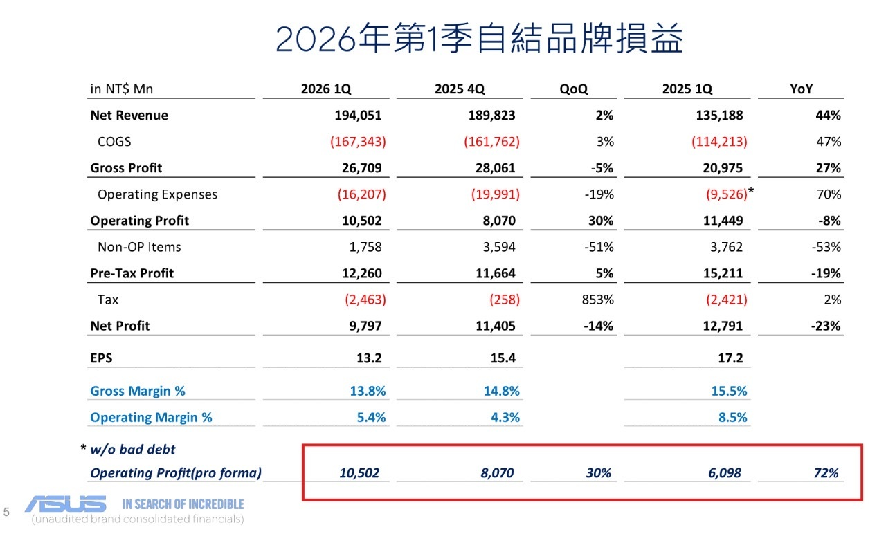
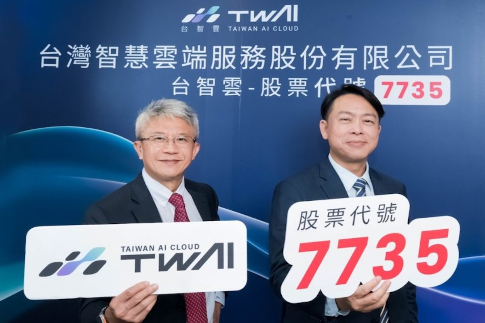
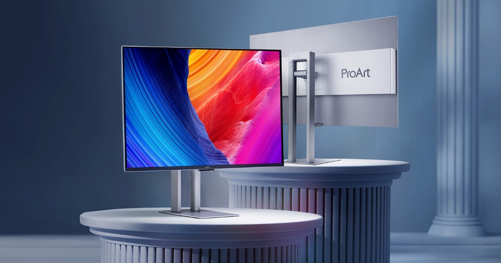
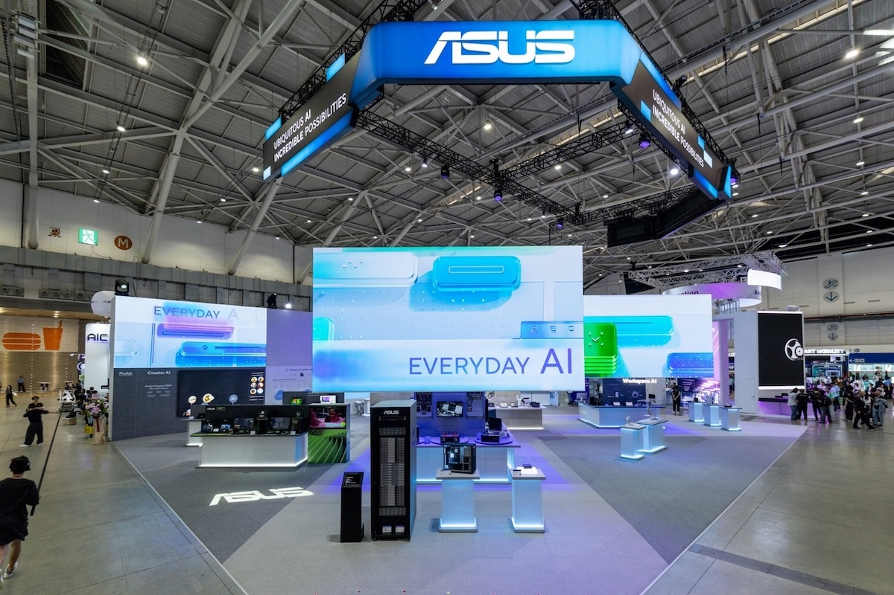
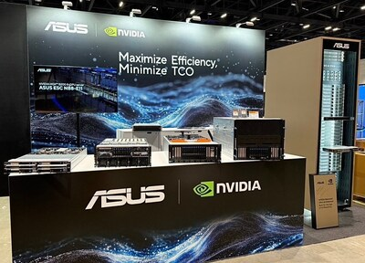
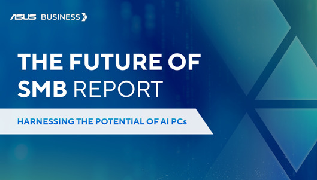
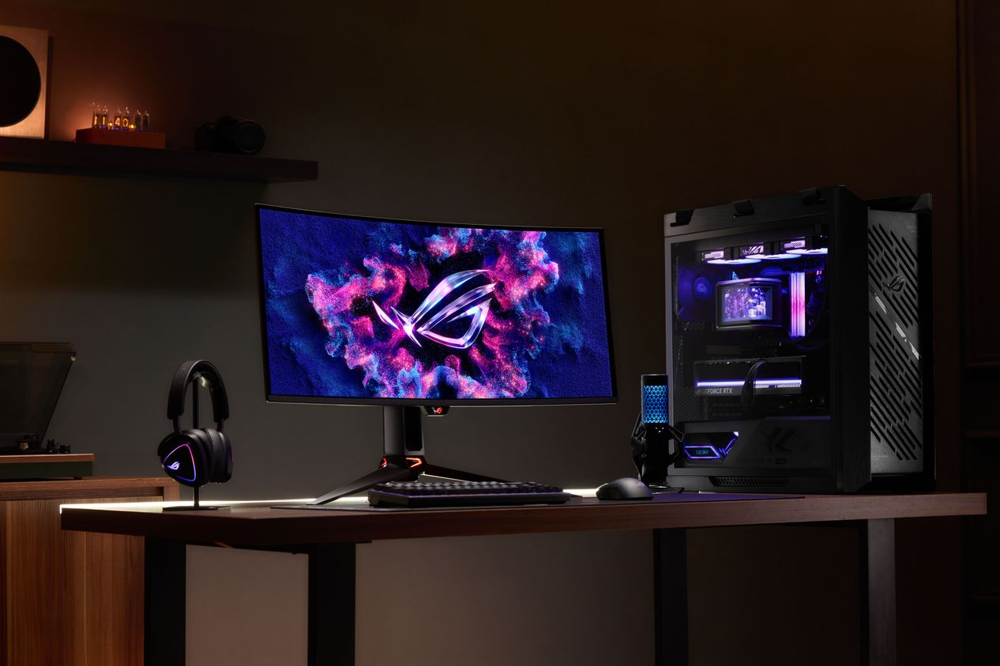
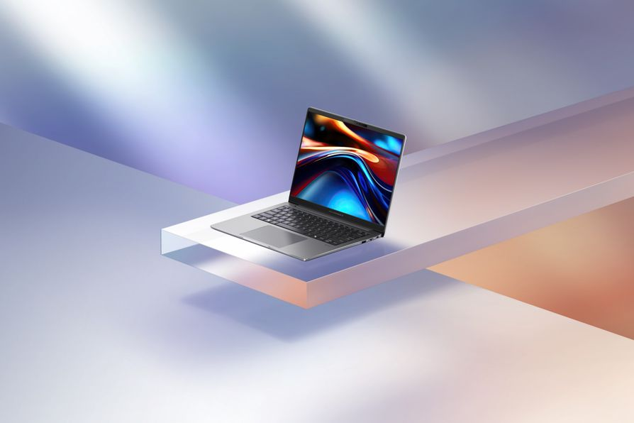
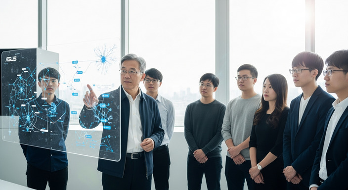
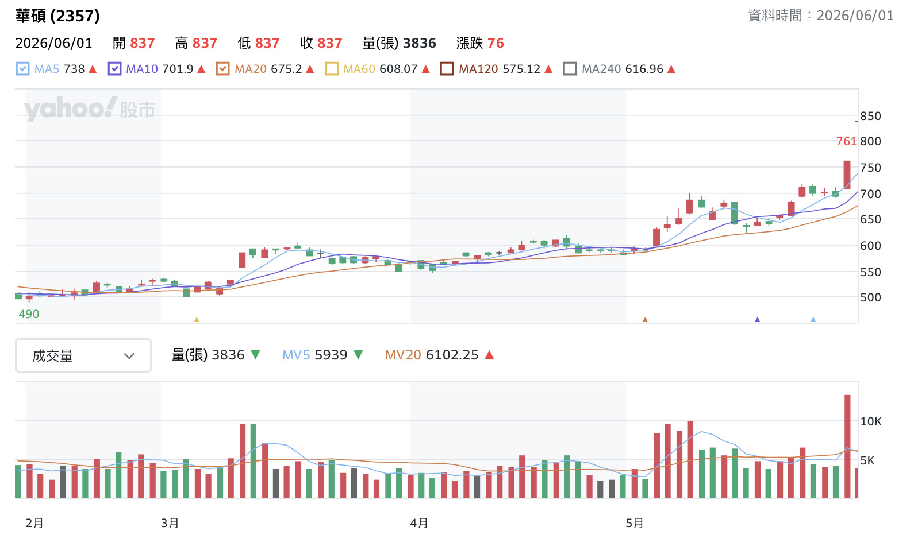

ASUSTeK Computer Inc. — Strategic Analysis Overview 華碩電腦股份有限公司｜策略分析總覽
ASUSTeK Computer Inc. is a leading global technology company headquartered in Taipei, Taiwan. Founded in 1989, ASUS has grown from a motherboard manufacturer into a diversified technology giant spanning consumer electronics, commercial solutions, and components. This report examines ASUS through five analytical lenses — culminating in actionable conclusions for sustaining competitive advantage in a rapidly evolving global market.
華碩電腦股份有限公司是總部位於台灣台北的全球領先科技企業，創立於1989年，從主機板製造商發展為多角化科技集團，產品涵蓋消費電子、商業解決方案與零組件。本報告透過五大分析面向深入剖析華碩，並提出有助於維持競爭優勢的結論與建議。
Company
Overview
公司簡介
A comprehensive look at ASUSTeK Computer Inc. — from breaking news to financial fundamentals.
全面解析華碩電腦股份有限公司——從最新動態到財務基本面。
Latest Significant News on ASUSTeK
華碩近期重大新聞
Q1 2026 Earnings: Core Operating Profit Surges 72%, EPS NT$13.19 2026 Q1 法說會：純本業獲利暴增 72%，單季 EPS 13.19 元

news4.jpg in /images圖片：請將 news4.jpg 放入 /imagesTWS (台智雲, 7735) Lists on OTC — AI Cloud Revenue Triples, Turns Profitable 台智雲（7735）5/29 登錄興櫃，2025 年營收翻倍、轉虧為盈

news2.jpg in /images圖片：請將 news2.jpg 放入 /imagesASUS Retains Global OLED Monitor #1 with 24% Market Share — Q1 Shipments Surge 78% 2026 Q1 全球 OLED 螢幕出貨年增 78%，華碩以 24% 市佔蟬聯榜首

news9.jpg in /images圖片：請將 news9.jpg 放入 /imagesASUS to Showcase "Ubiquitous AI" Ecosystem at COMPUTEX 2026 華碩 COMPUTEX 2026 主打「無所不在的 AI」生態系

news3.jpg in /images圖片：請將 news3.jpg 放入 /imagesASUS Unveils NVIDIA-Powered AI Infrastructure & AI POD (Vera Rubin NVL72) 華碩展示 NVIDIA 驅動的 AI 基礎設施與 AI POD（Vera Rubin NVL72）

news5.jpg in /images圖片：請將 news5.jpg 放入 /imagesASUS 2026 Future of SMB Report: Harnessing the Potential of AI PCs 華碩《2026 中小企業未來報告》：釋放 AI PC 的潛能

news6.jpg in /images圖片：請將 news6.jpg 放入 /imagesROG Debuts Next-Gen RGB Stripe Pixel OLED Monitors at CES 2026 ROG 於 CES 2026 發表新世代 RGB Stripe Pixel OLED 螢幕

news10.jpg in /images圖片：請將 news10.jpg 放入 /imagesASUS Commercial PCs Top Taiwan Market for 22 Consecutive Years 華碩商用電腦2025市佔稱冠！連續第22年年度冠軍

news8.jpg in /images圖片：請將 news8.jpg 放入 /imagesASUS Announces IS BG & Chao Kuo-wei Leads Data Center Business 華碩宣布IS BG成立，趙國維加入領導資料中心業務加速AI轉型

news7.jpg in /images圖片：請將 news7.jpg 放入 /imagesASUS (2357): Fundamentals, Shareholding & Technical Analysis 華碩(2357)：基本面、籌碼面與技術面表現
Figures from public market data (TWSE / Yahoo / StatementDog) as of late May 2026; for reference only, not investment advice. 數據取自公開市場資訊（證交所／Yahoo／財報狗），截至2026年5月底；僅供參考，非投資建議。

news1.jpg in /images圖片：請將 news1.jpg 放入 /imagesWhat We Are · What We Do · How We Behave
成為什麼 · 做什麼 · 如何行動
ASUS aspires to be a world-admired, innovative leading technology enterprise for the new digital era. Guided by the spirit of "In Search of Incredible," we continuously drive invention through innovation — creating unparalleled digital life experiences and leading the technology industry in endless transformation.
華碩致力成為數位新世代備受推崇的科技創新領導企業。追求「追尋無與倫比」的品牌精神，持續以創新驅動發明，打造無與倫比的數位生活體驗，引領科技產業不斷蛻變與創新。
Experience First"
ASUS's mission is to provide users worldwide with outstanding experiences through innovative products and solutions — allowing technology to truly improve human life. We emphasise Human-Centred and Experience First, encouraging rational and emotional thinking, pursuing perfect quality and humanised applications.
華碩的使命是以創新產品和解決方案，為全球使用者提供卓越的體驗，讓科技真正改善人類生活。強調「以人為本」與「體驗至上」，鼓勵理性與感性兼備，追求完美品質與人性化應用。
Strategic Architecture of ASUSTeK
華碩戰略架構解析
12+ BGs report in parallel → distributes decision-making risk across the organisation逾12個事業群平行直屬 → 有效分散決策風險，加速組織靈活性
Business Groups & Net Sales Mix 2021–2025
事業群與淨營收佔比 2021–2025
by Business Group各事業群
營收佔比
Source: ASUS Investor Conference 2021–2025資料來源：華碩各年度法說會
- OLED & Creator PCs expanded; dual-screen models launchedOLED與創作者電腦擴張；雙螢幕機型上市
- Early AI server solutions for smart manufacturing早期AI伺服器應用於智慧製造
- 1st-gen AI Laptops — redefining user behaviour via generative AI第一代AI筆電上市，以生成式AI重新定義使用行為
- AI Server revenue grew >50% YoYAI伺服器年增逾50%
- Copilot+ PCs targeting >30% market share; liquid-cooled AI supercomputersCopilot+ PC目標市占逾30%；液冷AI超級電腦
- ESG: low-carbon design integrated into R&D; ~3–5% of revenue in R&D低碳設計納入研發核心（ESG）；研發投入佔年收3–5%
2021–2025 Full Cyclical Transformation
2021–2025 完整財務週期轉型
| Q1 | Q2 | Q3 | Q4 | |
|---|---|---|---|---|
| 2021 | 13.18 | 15.31 | 15.25 | 16.23 |
| 2022 | 14.04 | 2.55 | 8.34 | -5.15 |
| 2023 | -2.26 | 3.48 | 14.94 | 5.29 |
| 2024 | 7.33 | 15.90 | 16.83 | 2.21 |
| 2025 | 17.22 | 13.20 | 14.21 | 15.36 |
💡 From -2.26 (2023 Q1) → +14.94 (2023 Q3) = +761% swing — extreme operational sensitivity to demand cycles.💡 從-2.26（2023Q1）→ +14.94（2023Q3）單季+761%，顯示對需求週期的極高敏感度。
| High最高 | Low最低 | Year-end年底 | |
|---|---|---|---|
| 2021 | 368 | 248 | 332 |
| 2022 | 340 | 230 | 255 |
| 2023 | 285 | 210 | 268 |
| 2024 | 375 | 262 | 345 |
| 2025 | 745 | 441 | ~570 |
External
Analysis
外部環境分析
Systematic examination of macro environment, industry structure, competitive landscape, and market lifecycle shaping ASUS's strategic context.
系統性剖析總體環境、產業結構、競爭格局與市場生命週期，勾勒華碩所處的策略外部情境。
Macro Analysis — PESTEL Framework
總體環境分析 — PESTEL 架構
🔄 Click each card to reveal the strategic implication for ASUS 🔄 點擊卡片翻轉，查看對華碩的策略意涵
ASUS must multi-source chips and pre-qualify backup suppliers. IS BG's AI server scale makes NVIDIA allocation a strategic priority, exposing ASUS to export control risk if US broadens restrictions.
須多元化晶片來源並預備備用供應商。IS BG的AI伺服器規模使NVIDIA配額成為戰略優先，美國擴大出口管制將直接衝擊供貨。
2022–23 EPS collapse (−67%) proves ASUS's extreme cyclicality. The ISG pivot to enterprise AI servers is a deliberate counter-cyclical hedge — enterprise demand is more stable and less discretionary than consumer PCs.
2022-23年EPS崩跌67%印證了ASUS的高度循環性。轉型企業AI伺服器是刻意的反週期對沖——企業需求比消費性PC更穩定。
ROG's 40%+ high-end gaming market share directly capitalizes on gaming culture. ProArt targets the creator economy. Dual-brand strategy captures both segments. Remote work sustaining demand for premium laptops is a structural tailwind.
ROG電競市佔40%+直接受益於電競文化。ProArt瞄準創作者經濟。雙品牌策略同時捕捉兩大族群。遠距工作持續支撐高端筆電需求。
ASUS's full-stack AI from data center (ISG) → edge (NUC/AAEON) → AI PC (Copilot+) mirrors the tech shift. ~5,000 R&D engineers + IS BG spin-off (Mar 2026) position ASUS as a beneficiary, not a victim, of AI disruption.
ASUS全端AI佈局：資料中心(ISG)→邊緣(NUC/AAEON)→AI PC(Copilot+)完整對應技術轉型。約5,000名研發工程師加上IS BG成立，使ASUS成為AI浪潮受益者。
ESG is becoming a market-entry threshold. ASUS's IEC 62443-4-1 cert + 2025 Sustainability Goals + circular economy supply chain are proactive investments. Enterprise clients increasingly require green supply chain compliance for procurement.
ESG正成為市場准入門檻。IEC認證+2025永續目標+循環經濟供應鏈均為超前佈局。企業採購日益要求綠色供應鏈合規。
140+ countries requires multi-jurisdiction legal compliance. On-device AI in Copilot+ PCs raises privacy-by-design requirements. Early cybersecurity certifications (IEC 62443-4-1) create a moat for enterprise AI server sales — competitors face catch-up risk.
140+國市場須應對多轄區法規合規。AI PC的端側處理提升隱私設計要求。IEC資安認證為企業AI伺服器銷售建立護城河，競爭者面臨追趕風險。
Technological disruption (AI) is an opportunity ASUS is actively capitalizing on through the IS BG and full-stack AI pivot. Political risk (US–China decoupling) is the main structural threat. ASUS's response: accelerate IS BG, diversify supply chains, and stay ahead of AI PC adoption curves.
技術顛覆（AI）是華碩透過IS BG積極把握的機遇。政治風險（美中脫鉤）是最主要的結構性威脅。華碩的應對：加速IS BG、多元化供應鏈、引領AI PC採用曲線。
Industry Value Chain
產業價值鏈
Competitor Analysis & Competitive Dynamics
競爭者分析與競爭動態
🖥️ Global PC & Laptop
🖥️ 全球PC與筆電
ASUS top-5 globally. Q3 2024: +16% YoY shipments — fastest among top vendors. >25% Copilot+ AI PC share.
全球前五大PC品牌。2024 Q3出貨年增16%（同業最快），Copilot+ AI PC市佔逾25%。
🎮 Gaming — ROG
🎮 電競市場 — ROG
ROG holds >30% gaming laptop share globally, ~50% of high-end (RTX 4080/4090) segment.
ROG全球電競筆電市佔逾30%，高階電競約50%。
🔧 Open Platform
🔧 開放平台
ASUS maintains motherboard & GPU leadership. Minor share shifts toward Gigabyte noted in 2024.
主機板與顯卡領先，2024年有少量市佔移向技嘉。
🤖 AI Servers — ISG
🤖 AI伺服器 — ISG
ISG enterprise AI server revenue +85% YoY. Competing for NVIDIA GPU server contracts and cloud/enterprise deployments.
ISG企業AI伺服器年增+85%，競爭NVIDIA GPU伺服器訂單。
🎨 Creator — ProArt
🎨 創作者 — ProArt
ProArt targets creative professionals demanding color-accurate displays and workstation-class performance.
ProArt瞄準需要色彩精準與工作站級效能的創作專業人士。
💼 Commercial — ExpertBook
💼 商用 — ExpertBook
ExpertBook P5 — 22 consecutive years #1 in Taiwan commercial PC market. AI ExpertMeet + DaaS enterprise services.
ExpertBook P5 — 台灣商用電腦市場連續22年冠軍。
🔬 R&D & Engineering
🔬 研發與工程文化
Engineering-led culture shared by MSI/Gigabyte — both deeply investing in AI servers and high-performance hardware.
工程師文化驅動，微星/技嘉同樣積極投資AI伺服器與高效能硬體。
🏆 Brand Value
🏆 品牌價值
ASUS: 12× Best Taiwan Global Brand (US$2.595B). Acer: comparable Taiwanese multinational brand structure & global distribution.
華碩第12度獲選台灣最佳國際品牌（25.95億美元）。宏碁品牌結構與通路高度相似。
🔗 Supply Chain
🔗 供應鏈韌性
ASUS reduced single-country production to <30% by 2024. Lenovo/HP face identical supply chain restructuring from geopolitical pressures.
2024年單一國家生產比重降至30%以下。聯想/惠普面對相同的供應鏈重組壓力。
💰 Financial Resources
💰 財務資源
ASUS market cap ~NT$421B (Apr 2026). Conservative leverage (52–55% debt ratio). Less financial firepower than Dell/HP for M&A.
市值約4,210億元，負債比率保守52-55%。收購財力不及戴爾/惠普。
🌐 Global Channels
🌐 全球通路
140+ countries coverage. Key difference: ASUS relies more on consumer retail, while Dell/HP have stronger enterprise direct sales.
140+國覆蓋。差異：華碩消費通路較強，戴爾/惠普企業直銷更具優勢。
⚙️ Manufacturing Capability
⚙️ 製造能力
ASUS retains more in-house R&D and design capability than Western OEMs — closer to Lenovo/MSI in manufacturing involvement.
華碩保有更多自主研發與設計能力，比西方OEM更接近聯想/微星的製造介入程度。
- High-frequency releases & spec leadership
- Early CPU/GPU adoption before rivals
- Sub-brand differentiation (ROG) to avoid price wars
- Fast supply chain for first-mover advantage
- IS BG spin-off → enterprise AI pivot
- 高頻率新品上市，規格搶先策略
- 搶先導入新處理器佔據市場
- 子品牌（ROG）差異化，避免價格戰
- 快速靈活供應鏈爭取先行者優勢
- IS BG獨立，轉型企業AI
- Dell/HP/Lenovo: enterprise contracts & service SLAs
- Counter with brand trust & B2B channel depth
- Accelerate product cycles or co-branding
- Shift competition to integrated IT solutions
- Leverage org scale to outlast ASUS differentiation
- 戴爾/惠普/聯想：企業合約與服務SLA強化
- 以品牌信任度與B2B通路抵銷優勢
- 加速新品節奏或聯名行銷
- 轉向整合IT解決方案競爭
- 以規模縮短華碩差異化窗口
ASUS's speed-driven approach creates opportunities but triggers rapid imitation, shortening differentiation windows. The IS BG pivot to enterprise AI is a strategic shift from speed-competition to ecosystem-lock-in — which is harder to imitate.
華碩速度導向策略創造機會，但也引發快速模仿，縮短差異化持續時間。IS BG轉向企業AI是從速度競爭轉向生態系鎖定的戰略轉型——更難被模仿。
Industry Analysis — Five Forces Framework
產業分析 — 波特五力架構
⚔️ 1. Rivalry Among Existing Competitors
⚔️ 1. 現有競爭者的競爭程度
HIGH 高Highly mature "red ocean" market. Competitors: Acer, MSI, Gigabyte, Lenovo, Dell, HP. ASUS counters through three strategies:
高度成熟的「紅海市場」。對手：宏碁、微星、技嘉、聯想、戴爾、惠普。三大反制策略：
ROG = >40% high-end gaming market share. High-value products = ~60% of System BG revenue.
ROG 高階電競市佔超40%；高附加價值產品佔系統事業群營收約60%。
e.g. dual-screen Zenbook DUO — differentiation through award-winning industrial design.
如雙螢幕 Zenbook DUO，以獲獎設計創造差異化。
First-mover in Copilot+ PC; expanding into AI servers & AIoT to build hardware-software moat.
Copilot+ PC 先行者；延伸至AI伺服器與AIoT，建立軟硬整合壁壘。
📱 2. Threat of Substitutes
📱 2. 替代品的威脅
MEDIUM 中Smartphones & tablets pose moderate substitution risk for traditional PCs. ASUS's two defensive strategies:
智慧型手機與平板對傳統PC有一定替代風險。兩大防禦策略：
Zenfone / ROG Phone, wearables, AIoT: smart manufacturing (AISVision, AISEHS), smart healthcare (LU800 ultrasound), smart retail & parking.
Zenfone/ROG Phone、穿戴裝置、AIoT：智慧製造（AISVision、AISEHS）、智慧醫療（LU800超音波）、智慧零售與停車。
Device as a Service: leasing & subscription replaces hardware buy-out. Combined with global e-waste recycling → higher customer stickiness, harder to substitute.
裝置即服務：租賃與訂閱取代買斷。結合全球廢電子回收，提升客戶黏著度，有效防堵替代威脅。
🚧 3. Threat of New Entrants
🚧 3. 新進入者的威脅
LOW 低Extremely high capital, technology & scale barriers. ASUS's three moats make it nearly impossible for new entrants to replicate its ecosystem:
極高的資金、技術與規模經濟門檻。三大護城河讓新進者幾乎無法複製其生態系：
~5,000 world-class R&D engineers. Full-Stack AI Infrastructure Capability from edge to enterprise servers.
近5,000位研發菁英。具備邊緣運算至企業AI伺服器的全端AI基礎設施能力。
Best Taiwan Global Brand 12 consecutive times. Fortune World's Most Admired Companies 11 times. High pricing power.
連續12度台灣最佳國際品牌。11度獲選《財富》全球最受推崇公司。享有定價優勢。
Sales in 70+ countries. World's first ISO 20400 Sustainable Procurement perfect 5-star certification (SGS).
銷售遍布70+國家。全球首張ISO 20400永續採購滿分五星認證（SGS）。
🏭 4. Bargaining Power of Suppliers
🏭 4. 供應商議價能力
POLARIZED 兩極化Intel, AMD, NVIDIA, Microsoft hold irreplaceable key tech. ASUS strategy: deep alliance — co-build NCHC Taiwania 4 AI supercomputer with NVIDIA; joint AI storage solutions with IBM & Micron.
Intel、AMD、NVIDIA、Microsoft掌握不可取代的關鍵技術。因應策略：深度結盟——與NVIDIA合作台灣杉四號AI超級電腦；與IBM、Micron共同開發AI最佳化儲存方案。
Pegatron, Quanta, Foxconn: ASUS leverages massive order volume & scale to dominate. Enforces RBA Code of Conduct, SBTi guidance, BCP requirements, and ISO 20400 compliance across supply chain.
和碩、廣達、鴻海：憑藉龐大訂單規模與規模經濟主導議價。強制執行RBA行為準則、輔導SBTi減碳目標、要求BCP，並落實ISO 20400永續採購認證。
🛒 5. Bargaining Power of Buyers
🛒 5. 買方議價能力
MANAGED LOW 有效壓低ROG cultivates strong gamer faith → lowers price sensitivity. >40% high-end gaming market share.
ROG培養強大玩家信仰→降低價格敏感度。高階電競市場佔有率超40%。
DPP (Digital Product Passport) + Carbon Partner Service help enterprise clients achieve ESG goals → commercial PC shipments grew +100% YoY.
數位產品護照（DPP）+ 碳合作夥伴服務協助企業達成ESG目標→商用PC出貨量年增 100%。
Global repair centers (Royal Club) + diverse support channels. Internal target: dissatisfaction <10%. Actual 2024 result: 0.03%–8.03% across all regions.
全球維修中心（皇家俱樂部）+ 多元諮詢管道。內部目標不滿意度<10%。2024年實際結果：全球各區 0.03%–8.03%。
Industry Lifecycle & Recent Financial News
產業生命週期與最新財務新聞
🚀 Edge AI / AIoT Solutions
🚀 Edge AI / AIoT 解決方案
Early Growth 早期成長階段Demand is rapidly expanding. Applications span smart manufacturing (AISVision, AISEHS), smart healthcare (LU800 ultrasound), smart retail, and parking. This is ASUS's most nascent but highest-velocity growth frontier.
需求快速擴張中。應用涵蓋智慧製造（AISVision、AISEHS）、智慧醫療（LU800超音波）、智慧零售與停車。是華碩目前最新興但成長速度最快的領域。
📈 Gaming Laptops / AI PC / Creator
📈 電競筆電 / AI PC / 創作者
Growth 成長期Growth rate exceeds the overall PC market. ROG holds >30% worldwide gaming laptop share and ~50% of the high-end segment (RTX 4080/4090). ASUS also secured first-mover advantage in the Copilot+ AI PC category with >25% segment share.
增速高於整體PC市場。ROG全球電競筆電市佔超30%，高階電競（RTX 4080/4090）約佔50%。Copilot+ AI PC市場亦取得先行者優勢，細分市佔超25%。
💻 Consumer Laptops
💻 一般消費型筆電
Mature — Mild Recovery 成熟期 — 溫和復甦A mature market, but post-pandemic remote work trends and the Windows 10 EOL upgrade cycle have triggered a mild recovery. Global PC shipments in Q1 2026 reached 63.3M units (+3.2% YoY). ASUS led all vendors with +20% YoY growth.
成熟市場，但疫後遠距工作趨勢與Windows 10支援終止帶動的升級換機潮，引發溫和復甦。2026 Q1全球PC出貨達6,330萬台（年增3.2%）。華碩年增20%居全球廠商之冠。
🔧 Motherboards / GPU Components
🔧 主機板 / 電腦零組件
Late Mature + Sub-growth 成熟後期 + 子市場成長Core business leaning toward maturity, but AI server demand and Edge AI are creating new growth sub-segments within components. ASUS holds the #1 global market share in both motherboards and graphics cards.
核心業務偏向成熟期，但AI伺服器與Edge AI需求在零組件領域拉出新的成長子市場。華碩在全球主機板與顯示卡市場均維持市佔第一。
Global PC shipments reached 63.3M units in Q1 2026, up 3.2% YoY — driven by memory price hike pre-stocking and Windows 10 end-of-support migration. ASUS outpaced all rivals with 20% growth. Lenovo, HP, Dell, and Apple also posted double-digit gains.
2026年Q1全球PC出貨達6,330萬台，年增3.2%，主因記憶體漲價備貨效應與Windows 10支援終止帶動換機潮。華碩以20%增幅超越所有競爭對手，聯想、惠普、戴爾、蘋果亦呈雙位數成長。
Internal
Resources
內部資源分析
Deep-dive into ASUS's internal strengths — from core businesses and value chain to key resources, competencies, and dynamic capabilities.
深入剖析華碩的內部優勢——涵蓋核心業務、企業價值鏈、關鍵資源、核心競爭力與動態能力。
Core Businesses / Product Lines
核心業務與產品線
2025 Full-Year Revenue Mix
2025 全年營收組合
System Products — 52%
系統產品 — 52%
Largest SegmentNotebooks, desktops, and smartphones. ASUS ranks among the top 3 global Windows consumer laptop vendors with ~12% consumer notebook market share (2024 estimate).
筆記型電腦、桌上型電腦及智慧型手機。華碩為全球前三大 Windows 消費型筆電廠商，2024 年消費型筆電全球市佔率約 12%。
Open Platform — 28%
開放式平台 — 28%
#1 Global MotherboardMotherboards, graphics cards, monitors, routers, and servers. ASUS motherboard holds the No. 1 global market share for consecutive years; cumulative global shipments have surpassed 600 million units since 1989.
主機板、顯示卡、螢幕、路由器、伺服器。華碩主機板連續數年維持全球市佔率第一；自 1989 年創立至今，全球主機板銷量突破 6 億片。
ISG (Infrastructure Solutions) — 18%
ISG 智慧基礎設施 — 18%
Enterprise servers, networking, and data centre solutions aligned with AI-driven infrastructure demand. Positioned as a key growth driver alongside the AI PC and edge computing wave.
企業伺服器、網路設備與資料中心解決方案，受惠於 AI 基礎設施需求成長，為重要成長動能。
AIoT — 2%
AIoT — 2%
EmergingAI solutions for smart manufacturing, smart healthcare, and smart retail. Part of ASUS's strategic pivot toward becoming a full-spectrum AI company.
智慧製造、智慧醫療、智慧零售等 AI 解決方案。為華碩邁向全方位 AI 公司的策略轉型核心。
Market Position & Brand Recognition
市場地位與品牌認可
ASUS was named one of Fortune's "World's Most Admired Companies" in 2025. Products span motherboards, GPUs, notebooks, smartphones, monitors, routers, servers, and AI solutions — actively expanding into gaming (ROG/TUF) and AIoT innovation.
華碩 2025 年續獲美國《財富》雜誌「全球最受推崇企業」殊榮。產品線橫跨主機板、顯示卡、筆電、智慧手機、螢幕、路由器、伺服器及 AI 解決方案，並積極拓展電競及 AIoT 創新。
Short-Term Strategic Focus
短期發展重點
With AI and hybrid work proliferating, ASUS is launching next-gen AI PCs and Edge AI devices integrating cloud and local computing — targeting mobile computing, multimedia, and enterprise productivity, enhancing portability, connectivity, and service depth.
隨 AI 與混合工作模式普及，華碩將推出整合雲端與本地運算的新一代 AI PC 與 Edge AI 裝置，針對行動運算、多媒體娛樂及商務辦公設計專屬解決方案，強化可攜性、連線能力與服務深度。
ASUS Internal Corporate Value Chain
ASUS 內部企業價值鏈
▼ Click any activity to expand details & strategic insight ▼ 點擊展開各活動的詳細說明與策略洞察
Coordinates global suppliers for chipsets (NVIDIA/Intel/AMD), memory (Micron/Samsung), and display panels. Maintains strategic buffer inventory for high-demand components (especially GPU/CPU allocation during AI boom).
協調晶片（NVIDIA/Intel/AMD）、記憶體（美光/三星）、顯示面板等全球供應商。維持高需求零件的戰略緩衝庫存（尤其是AI熱潮期間的GPU/CPU配額）。
ASUS's scale enables preferred allocations from key chip vendors — critical during GPU scarcity. Strategic inventory build (NT$100B+ at peak) was a deliberate move to secure AI server components ahead of competitors.
華碩規模確保在主要晶片廠的優先配額——在GPU稀缺期間至關重要。高峰期建立的戰略庫存（逾千億元）是提前搶佔AI伺服器零組件的刻意布局。
Product design and engineering done in-house; manufacturing outsourced to Quanta, Foxconn, and Compal. ASUS retains IP, spec authority, and quality control — ODMs handle volume production.
產品設計與工程自行完成，製造外包給廣達、鴻海、仁寶。ASUS保有智財、規格主導權與品質管控，ODM負責量產。
By outsourcing low-margin manufacturing, ASUS concentrates capital at the high-value ends of the Smile Curve: upstream R&D/design and downstream brand/marketing. This model yields higher margins than vertically integrated competitors.
外包低毛利製造，使華碩能將資本集中於微笑曲線的高附加值兩端：上游研發/設計與下游品牌/行銷。此模式比垂直整合對手獲得更高毛利率。
Warehousing, order fulfillment, and delivery scheduling tightly integrated with global 3PL providers (DHL, FedEx, Synnex). Regional distribution centers in key markets optimize last-mile delivery for both B2C and B2B channels.
倉儲管理、訂單處理與出貨安排與全球3PL物流商（DHL/FedEx/聯強）緊密整合。各主要市場設有區域配送中心，優化B2C與B2B通路的最後一哩物流。
Logistics efficiency is a battleground — in AI server deployment, speed of delivery to enterprise clients can determine contract renewal. ASUS's ISG business requires more sophisticated B2B logistics than traditional consumer PC channels.
物流效率是競爭重點——AI伺服器部署中，交貨速度可影響企業客戶合約續簽。ISG業務需要比傳統消費性PC通路更複雜的B2B物流能力。
Multi-brand strategy: ASUS (mainstream), ROG (gaming premium), ProArt (creator), ExpertBook (commercial). Each brand targets a distinct segment, allowing ASUS to command premium prices while maintaining mass market presence without brand dilution.
多品牌策略：ASUS（主流）、ROG（電競溢價）、ProArt（創作者）、ExpertBook（商用）。各品牌針對不同細分市場，在不稀釋品牌的前提下同時維持大眾市場與溢價定位。
ROG's esports sponsorships and community building generate organic brand equity beyond advertising spend. US$2.595B brand valuation (2025 Interbrand) reflects this — creating pricing power Lenovo and Dell struggle to match in gaming.
ROG電競贊助與社群建立帶來超越廣告費用的自然品牌資產。品牌估值25.95億美元（2025 Interbrand），使ASUS在電競市場擁有聯想和戴爾難以匹敵的定價能力。
Global warranty management, technical support centers, and certified repair networks. ExpertBook: 3-year on-site warranty. ISG: enterprise SLAs with guaranteed uptime. ASUS ProCare extended warranty for commercial clients.
全球保固管理、技術支援中心與授權維修網絡。ExpertBook：3年到府保固。ISG：企業SLA保障運作時間。ASUS ProCare商業客戶延伸保固。
For enterprise AI servers, after-sales service quality directly impacts switching costs. ASUS's ISG pivot requires upgrading service infrastructure to match Dell/HPE enterprise support levels — this is an ongoing capability gap being addressed.
企業AI伺服器的售後服務品質直接影響客戶轉換成本。IS BG轉型需要將服務基礎設施提升至Dell/HPE企業支援水準——此能力缺口正在積極補強。
Org structure, governance, financial control & strategic planning — determining resource allocation efficiency.
組織架構、公司治理、財務控制與策略規劃，決定資源配置效率。
Dual Co-CEO structure (Hsu: stabilize core / Samson: explore frontiers) distributes strategic risk. 12+ parallel BGs give flexibility but require strong governance to prevent coordination failures — the IS BG spin-off demonstrates this system working at pace.
雙執行長制（許：穩固本業/胡：探索前沿）分散策略風險。12+平行事業群提供靈活性，但需強力治理防止協調失靈——IS BG的快速成立印證了這套體系的運作效率。
~5,000 R&D engineers. Talent recruitment, workforce development & leadership cultivation.
約5,000名研發工程師。人才招募、人員培訓與領導力發展。
The talent redeployment from discontinued NUC/IoT to IS BG data center teams exemplifies ASUS's dynamic capability. Rather than mass layoffs, ASUS pivots talent internally — preserving institutional knowledge while accelerating AI transformation. Key competitive risk: talent competition with hyperscalers for AI engineers.
從停止的NUC/IoT業務將人才重新部署至IS BG資料中心團隊，印證了ASUS的動態能力。不是大規模裁員，而是內部轉型——保留機構知識同時加速AI轉型。關鍵競爭風險：與超大規模雲端業者爭奪AI工程師。
R&D: NT$24.8B FY2025. AI integration, thermal engineering & product innovation — most critical competence.
研發費用：114年NT$24.8B。AI整合、散熱技術與產品創新——最重要核心能力。
ASUS's pivot to Physical AI (robotics + AI PC + AI servers) demonstrates R&D agility. IEC 62443-4-1 cybersecurity certification required ~2 years of R&D investment — now creating an enterprise sales moat. NT$13.3B intangible assets (patents, software, goodwill) reflect accumulated R&D compound interest.
ASUS轉向實體AI（機器人+AI PC+AI伺服器）展現研發靈活性。IEC 62443-4-1資安認證需約2年研發投入——現已形成企業銷售護城河。NT$133億元無形資產（專利、軟體、商譽）反映累積的研發複利效果。
Strategic sourcing of high-quality components & supplier relationship management. Directly impacting cost, quality & lead time.
高品質零組件策略採購與供應商關係管理，直接影響成本、品質與交期。
ASUS's strategic inventory build (peak NT$100B+) was procurement strategy — securing NVIDIA GPU allocations during scarcity before competitors. NT$2.3B customer relationships as intangible asset (annual report) reflects the long-term value embedded in supplier/partner networks. Risk: over-inventory in downturns (as seen 2022–23).
ASUS的戰略庫存建立（高峰逾千億元）是採購策略——在稀缺期搶先競爭者鎖定NVIDIA GPU配額。年報中NT$23億元的客戶關係無形資產，反映了供應商/合作夥伴網絡的長期價值。風險：景氣下行時的庫存過剩（如2022-23年所見）。
ASUS focuses on Design + Brand + R&D rather than heavy manufacturing — delivering higher flexibility and lower fixed costs.
華碩聚焦於設計＋品牌＋研發，而非大量自製——帶來更高彈性與更低固定成本。
Value originates from innovation, not scale. Unlike low-price competitors, ASUS emphasizes high performance and design differentiation.
價值來自創新而非規模，不走低價路線，強調高性能與設計差異化。
Unifying supply chain + design + marketing into a seamless system — the true source of sustainable competitive advantage.
將供應鏈＋設計＋行銷整合成一完整系統——才是真正可持續競爭優勢的來源。
Key Resources – Tangible & Intangible
關鍵資源——有形與無形
ASUS has fully separated its brand from manufacturing. Competitive advantage is not built on production facilities but on strategic financial assets and global operational infrastructure — the bedrock supporting high-value products such as ROG and ISG servers.
華碩已完成品牌與代工分家，徹底貫徹輕資產策略。競爭優勢並非建立在製造廠房，而是高度集中的戰略性財務資產與全球運籌實體設施，作為支撐 ROG 與 ISG 伺服器等高附加價值產品的基石。
High merchandise inventory confirms the asset-light outsourcing model. The NT$77.4B raw material stockpile reveals a powerful "Buy-and-Sell" strategy: in an era of extreme AI GPU scarcity, ASUS directly secures critical components (e.g., NVIDIA GPUs) from upstream suppliers, then distributes to contract manufacturers.
高額商品存貨印證輕資產外包戰略；高達 774 億的原料庫存展現了強大的「Buy-and-Sell 代購物料」策略——在 AI 伺服器晶片（如 NVIDIA GPU）極度缺貨的環境下，華碩親自向上游搶下關鍵零組件，再發料給代工廠。
This "procurement hegemony" relies on 30+ years of supplier negotiation status and trust (historical causal ambiguity). Competitors cannot easily replicate OEM priority allocation rights, even with equal capital. (cf. Quinn & Hilmer, 1994; Khanna & Palepu, 2000)
「叫貨霸權」依賴華碩過去 30 年在全球 PC 市場累積的供應商談判地位與信任（歷史因果模糊性），競爭對手即使有相同資金，也無法輕易複製原廠的優先配貨權。（參見 Quinn & Hilmer, 1994；Khanna & Palepu, 2000）
As AI transformation drives extreme hardware procurement costs requiring large prepayments, a deep cash pool is the fuel for ASUS's dynamic capabilities — enabling rapid resource reallocation. Brand manufacturers simultaneously holding sufficient cash and OEM direct-procurement rights are extremely rare, effectively excluding second-tier competitors.
面臨 AI 轉型，高階硬體採購成本極高且需大量預付款。充沛現金池是華碩展現動態能力的燃料，使其擁有快速調整資源配置的餘裕。在 AI 晶片荒時，同時擁有足夠現金且具備原廠直接採購權的品牌廠極度稀有，直接排除了二線品牌的競爭威脅。
Very few brand vendors can simultaneously maintain high cash reserves AND hold direct upstream OEM procurement priority — making this combination strategically rare.
能同時維持高現金水位、又具備上游原廠直接採購優先權的品牌廠極度稀少，此組合具備高度策略稀有性。
With production fully outsourced, ASUS must ensure final products command a premium. The costly physical test chambers and cutting-edge labs at HQ and Ligong Building are the hardware bedrock ensuring ROG gaming laptops and AI servers pass rigorous environmental testing.
由於生產線全面外包，華碩必須確保最終產品具備溢價能力。企總與立功大樓的造價高昂實體測試艙與尖端實驗室，是確保 ROG 電競筆電與 AI 伺服器能通過嚴苛環境測試的硬體基石。
These facilities directly create product value (Valuable) — enabling ASUS to maintain premium pricing unaffected by contract manufacturer quality variance.
這些設施直接創造產品的價值性，使華碩能維持高毛利定價，不受代工廠品質波動影響。
For B2B enterprise clients (ISG), server failures cannot rely on international shipping for repairs. ASUS's physical logistics nodes and warehouses across three continents deliver on-site 24-hour spare part replacement SLAs. For enterprise clients, the server hardware can be replaced — but this global real-time repair network built with physical warehousing dramatically raises switching costs.
面對 B2B 企業級客戶（ISG 事業群），產品故障不能僅靠跨國郵寄送修。華碩遍佈三大洲的實體物流節點與發貨倉，能確保提供在地 24 小時內的備品替換服務 (SLA)，大幅提高客戶轉換成本。
Server hardware itself is replaceable, but a globally distributed immediate-repair network tied to physical warehousing is non-substitutable — creating deep lock-in for enterprise accounts.
伺服器硬體本身可被替換，但結合實體倉儲建構的「全球即時維修網絡」具高度不可替代性，形成企業客戶的深度鎖定效果。
ASUS emphasizes employee engagement and development through a systematic professional manager system as a core business driver.
華碩強調員工發展，建立系統化專業經理人制度作為業務運營的核心驅動力。
(salaries, insurance, pensions)
（薪資、勞健保、退休金）
Corporate Culture
企業文化
Chairman Jonney Shih's "Inspiring Innovation, Persistent Perfection" (崇本務實) culture — solid technical skills + precise management — serves as crucial structural capital for sustainable development.
施崇棠董事長主導的「崇本務實」文化，強調紮實技術與精準管理，是可持續發展的重要結構資本。
R&D & Innovation Tech
研發與創新技術
Pivoted toward "Physical AI" (smart robotics, AI PCs) and IoT/cybersecurity (IEC 62443-4-1 certified). R&D expenses FY2025: NT$24,846,804K.
資源轉向「實體 AI」（智慧機器人、AI PC）及 IoT/資安（持有 IEC 62443-4-1 認證）。114 年研發費用：NT$24,846,804K。
Patents, Software & Goodwill
專利、軟體與商譽
Total intangible assets: NT$13,282,961K — including Goodwill NT$8,889,595K (TECHPOINT acquisition), Trademarks NT$794,187K, Computer Software NT$687,867K.
無形資產合計：NT$13,282,961K——商譽 NT$8,889,595K（含 TECHPOINT 收購）、商標 NT$794,187K、電腦軟體 NT$687,867K。
Brand Value & Reputation
品牌價值與聲譽
The ASUS master brand and ROG gaming sub-brand enjoy exceptionally high international recognition — generating invaluable social capital and pricing power.
ASUS 主品牌與 ROG 電競子品牌享有極高的國際知名度，創造無可估量的社會資本與定價能力。
Customer & Supply Chain Networks
客戶與供應鏈網絡
ESG-driven sustainable supply chain with strong circular economy influence. Financial reports explicitly recognize Customer Relations as an intangible asset valued at NT$2,296,144K.
ESG 驅動的永續供應鏈，具強大循環經濟影響力。財報明確將客戶關係列為無形資產，價值 NT$2,296,144K。
Key Ecosystem Partners
生態圈關鍵夥伴
Through equity and business investments, ASUS cultivates a vast associate ecosystem: ASMedia (祥碩), AAEON (研揚), IBASE (廣積), WT Microelectronics (文曄) — complementary assets greatly strengthening relational capital.
透過股權與業務投資，培育廣大關聯企業生態圈：祥碩（ASMedia）、研揚（AAEON）、廣積（IBASE）、文曄（WT Microelectronics）——互補資產大幅強化關係資本。
Core Competencies, Complementary Assets & Key Partners
核心競爭力、互補性資產與關鍵合作夥伴
Holds #1 global market share in motherboards and GPUs. Incorporates Design Thinking to launch leapfrog innovations (e.g., Zenbook DUO dual-screen). Possesses Full-Stack AI Infrastructure Capability.
主機板與顯示卡全球市佔第一。導入設計思維推出躍進式創新（如 Zenbook DUO 雙螢幕），並具備全端 AI 基礎設施能力。
On the smart manufacturing front, ASUS developed AISVision machine vision and AISEHS smart industrial safety platform — fully realizing AIoT solutions across factory floors.
在智慧製造端成功開發 AISVision 機器視覺與 AISEHS 智慧工業安全防護平台，全面實現 AIoT 解決方案。
ASUS leads industry in embedding sustainability and security by design — creating durable competitive differentiation that is extremely difficult to replicate.
華碩領先業界將永續與資安嵌入設計流程，形成極難複製的持久競爭差異化。
International Brand Value
國際品牌價值
ROG firmly holds #1 in the premium gaming ecosystem — delivering exceptional customer trust and pricing power that underpins premium margins.
ROG 穩居頂尖電競生態系第一地位，享有極高客戶信任度與定價優勢，支撐高毛利空間。
Resilient Sustainable Supply Chain
高韌性永續供應鏈
Strictly enforces RBA Code of Conduct audits; guides suppliers in formulating climate change Business Continuity Plans (BCP) to ensure supply chain resilience.
嚴格執行 RBA 行為準則稽核，輔導供應商制定氣候變遷 BCP，確保供應鏈韌性。
Innovative Green Value-Added Services
創新綠色加值服務
Partnered with NVIDIA to build AI supercomputers (NCHC Taiwania 4). Co-developed AI/HPC optimized storage solutions with IBM, Micron, and Weka.
與 NVIDIA 結盟打造 AI 超級電腦（NCHC 台灣杉四號），並與 IBM、Micron、Weka 共同開發 AI/HPC 最佳化儲存解決方案。
Relies on assembly capacity to execute manufacturing. Simultaneously guides EMS plants in Chongqing and elsewhere to establish low-carbon indicators and Science Based Targets (SBTi).
高度依賴組裝廠產能執行製造，同時深入輔導重慶等地 EMS 廠建立低碳指標與科學減碳目標 (SBTi)。
Alliance on data center liquid cooling and thermal solutions (Vertiv, Schneider, Auras). Collaborates closely with Google Cloud Taiwan and TWS on generative AI development.
在資料中心液冷與散熱解決方案上與 Vertiv、Schneider、Auras 結盟；在生成式 AI 開發上與 Google Cloud Taiwan 及台灣智慧雲端密切協作。
Joint R&D Center with NTU for frontier tech. Matches startups (e.g., long-life battery) via "AI+ Taipei." Official member of FIRST (world's largest cybersecurity IR org) and RBA Full Member for global supply chain standards.
與臺大設立聯合研發中心，透過「AI+ Taipei」媒合外部新創（如長壽命電池）。正式加入 FIRST（全球最大資安事件應變組織）及成為 RBA 全責會員，強化全球聯防與供應鏈標準。
Dynamic Capabilities — Internal Reconstruction Logic
動態能力——內部重建邏輯
ASUS's internal dynamic capabilities operate as an evolving internal mechanism — not single-point product innovation, but a system-level ability to restructure its operational logic from the inside out. Through organizational restructuring, talent redeployment, and technological platformization, ASUS continuously converts dispersed resources into integrated, scalable, and reusable capability systems.
ASUS 的內部動態能力是一種持續演化的內部機制——並非單純的產品創新，而是由內而外重構企業運作邏輯的系統性能力。透過組織重組、人才再配置與技術平台化，把原本分散的資源轉化為可整合、可擴展、可重複利用的能力體系。
The newly established Infrastructure Solutions Business Group (IS BG) reorganizes capabilities previously scattered across IoT, server, and solution divisions into three major units: data centers, edge computing, and integrated solutions. This transforms internal tech knowledge from isolated product capabilities into modular, recombinable solution capabilities — allowing AI servers, AI PCs, and edge AI to interact and scale together.
新成立的基礎方案事業群（IS BG）把原本分散在物聯網、伺服器、解決方案等不同單位的能力重新編排，形成資料中心、邊緣運算與解決方案三大事業單位，讓技術知識從「單點產品能力」轉變為模組化、可組合的解決方案能力。
Justin Zhao (趙國維) and his team — originally focused on NUC and IoT — were transitioned into the data center business to directly serve sovereign AI infrastructure and enterprise AI needs. ASUS is not building capabilities from scratch externally, but redeploying existing expertise into high-growth areas. This allows rapid entry into the AI infrastructure market without full reliance on external recruitment.
趙國維帶領原本 NUC 與物聯網相關團隊轉入資料中心業務，直接承接主權 AI 機房與企業 AI 基礎設施需求。公司不是從外部重新打造能力，而是將既有團隊的技術與經驗重新部署到高成長領域，在不完全依賴外部資源的情況下快速切入 AI 基礎設施市場。
Different product lines are integrated into a unified AI architecture rather than operating in isolation. This shared internal tech chain supports the full process from model training to deployment and application. Resources are not just used, but reused and scaled — enhancing organizational learning speed and innovation efficiency.
不同產品線被整合進統一的 AI 架構而非各自獨立。從資料中心到邊緣運算再到終端 AI PC，形成一條內部可共享的技術鏈，支援模型訓練、部署到應用全流程。內部資源不只是被使用，而是可以重複利用與擴展，提升組織學習速度與創新效率。
In AI City and enterprise AI solutions, ASUS employs unified architectures (multi-layer AI frameworks + integrated platforms) to break boundaries between products, business units, and application scenarios. Different internal units operate and collaborate under a common logic, shifting from traditional functional silos toward a solution- and scenario-driven operating model with continuous self-optimization capability.
在 AI City 與企業 AI 方案中，公司透過統一架構（多層 AI 架構與整合平台）打破不同產品、事業群與應用場景之間的邊界，使內部各單位能在同一套邏輯下運作與協作，從傳統功能分工轉向以解決方案與場景為核心的運作模式，讓組織具備持續調整與自我優化的能力。
Growth
Strategy
成長策略
An integrated analysis of ASUS's growth strategy — vertical integration, product diversification, geographical expansion, market entry modes, and future challenges.
深入剖析華碩的成長策略——垂直整合、產品多角化、地理擴張、市場進入模式，以及未來挑戰與建議。
Vertical Integration (VI)
垂直整合（Vertical Integration, VI）
- AI server & HPC infrastructure design
- Liquid cooling technology
- Data-center architecture integration
- Supply-chain management
- Tech partnerships (NVIDIA, Siemens)
- AI 伺服器與 HPC 基礎架構設計
- 液冷散熱技術
- 資料中心架構整合
- 供應鏈管理
- 技術合作（NVIDIA、Siemens）
Reduce supply-chain risks & strengthen control over critical components to avoid hold-up problems and protect core technology.
降低供應鏈風險並提升關鍵零組件掌控能力，避免敲竹槓問題，保護核心技術。
- AI cloud services (ASUS Cloud, Taiwan AI Cloud)
- AI platform integration
- Data-center services
- Smart manufacturing solutions
- End-to-end AI application services
- AI 雲端服務（ASUS Cloud、Taiwan AI Cloud）
- AI 平台整合
- 資料中心服務
- 智慧工廠解決方案
- AI 應用服務（端到端解決方案）
ASUS is transforming from a hardware manufacturer into an integrated AI infrastructure & digital solution provider — extending from device to cloud.
ASUS 正從硬體製造商轉型為AI 與數位基礎建設整合服務供應商——從終端裝置延伸至雲端。
ASUS adopts bidirectional vertical integration, but its strategic emphasis leans toward downstream integration — transforming from a hardware manufacturer into an integrated AI infrastructure and digital solution provider.
ASUS 屬於雙向垂直整合，但策略重點偏向下游整合——由硬體製造商轉型為 AI 與數位基礎建設整合服務供應商。
ASUS possesses highly specialized assets with high R&D costs, high customization, and limited substitutability. Without VI, ASUS faces hold-up problems, technology leakage risks, and reduced bargaining power.
ASUS 擁有高度專屬性資產，具有高研發成本、高客製化程度與難以替代性。若無 VI，易產生敲竹槓問題、技術外流與議價能力下降。
Highly frequent transactions increase coordination costs, negotiation costs, and monitoring costs. Through internalization — own cloud platforms, internal AI infrastructure, long-term supply-chain partnerships — ASUS reduces long-run transaction costs.
高頻率交易增加協調成本、談判成本與監控成本。透過內部化——自建雲端、AI 基礎架構、長期供應鏈——可降低長期交易成本。
The AI and semiconductor industries face AI chip shortages, geopolitical risks, export controls, and rapid technological change. ASUS responds with vertical integration, localized production, and end-to-end AI infrastructure to reduce supply uncertainty.
AI 與半導體市場存在AI 晶片供應短缺、地緣政治風險、出口管制、技術快速更新等挑戰。ASUS 以 VI、在地化生產與端到端 AI 基礎架構應對。
Compared with other global tech firms, ASUS conducts relatively fewer large-scale acquisitions and instead prefers internal development and strategic partnerships. The VI model is primarily driven by Internal Development + Strategic Alliances.
相較於其他全球科技企業，ASUS 較少採取大規模併購，更偏好內部研發與策略合作。VI 模式主要依靠內部發展 ＋ 策略聯盟。
Horizontal / Product Diversification
水平多角化與產品多元化
ASUS expanded beyond traditional PC & motherboard businesses into AI PCs, AI servers, edge computing, enterprise solutions, NUC mini PCs, and smart city applications — all closely connected to existing hardware, engineering, and computing capabilities.
ASUS 從傳統 PC 與主機板業務擴展至 AI PC、AI 伺服器、邊緣運算、企業解決方案、NUC 迷你電腦與智慧城市應用——皆與現有硬體、工程與運算能力緊密相連。
All diversified products share the same technological foundations:
多元化產品共享相同技術基礎：
ASUS can reuse existing resources across multiple product categories — reducing R&D duplication and accelerating time-to-market for new products.
ASUS 可在多個產品類別中重複利用既有資源，降低重複 R&D 成本，加速新產品上市。
Customer base expanded from consumer to enterprise:
客戶群從消費者延伸至企業：
Strong brand, global channels & customer trust from PCs let ASUS differentiate via faster launches, high-spec products & AI-enabled hardware against Dell, HP, Lenovo.
PC 業務建立的品牌、通路與客戶信任，讓 ASUS 以快速推出、高規格與 AI 硬體對抗 Dell、HP、Lenovo。
ASUS benefits from sharing resources across business units. The same engineering capabilities used for PCs are directly applied to AI servers and NUC products, reducing development and operational costs across multiple product lines.
ASUS 受益於跨事業單位的資源共享。相同的工程能力直接應用於 AI 伺服器與 NUC 產品，降低跨產品線的開發與營運成本。
Large-scale PC manufacturing enables ASUS to lower component procurement costs, improve production efficiency, and reduce average costs for AI products through volume leverage.
大規模 PC 製造使 ASUS 能夠透過量體優勢，降低零組件採購成本、提升生產效率並降低 AI 產品平均成本。
Years of experience in hardware manufacturing, product design, and global logistics help ASUS accelerate AI product development, optimize product design, and improve time-to-market efficiency.
多年硬體製造、產品設計與全球物流經驗，幫助 ASUS 加速 AI 產品開發、優化產品設計並提升上市效率。
ASUS is building an integrated AI ecosystem across AI PCs, mini PCs, enterprise solutions, and edge computing. Customers benefit from unified hardware/software experience, brand consistency, and integrated support, creating cross-product synergies.
ASUS 正在跨 AI PC、迷你電腦、企業解決方案與邊緣運算建構整合 AI 生態系統。客戶受益於統一的軟硬體體驗、品牌一致性與整合支援服務，創造跨產品綜效。
Intel transferred its NUC (Next Unit of Computing) business to ASUS through a strategic collaboration — giving ASUS immediate access to established technology, an existing customer base, and an ecosystem with lower market-entry risk.
Intel 透過策略合作將 NUC（迷你電腦）業務移轉給 ASUS，使 ASUS 立即獲得成熟技術、既有客戶群與生態系統，大幅降低市場進入風險。
Compared with many competitors, ASUS relies less on large-scale acquisitions. Instead, it focuses on capability integration, strategic partnerships, and internal resource redeployment.
相較於許多競爭對手，ASUS 較少依賴大規模併購，而是聚焦於能力整合、策略合作夥伴關係與內部資源重新配置。
ASUS's diversification strategy demonstrates a clear transition — from a traditional PC hardware manufacturer toward an AI and digital infrastructure solution provider — leveraging existing engineering, supply chain, brand, and global channels to expand into AI computing, enterprise, edge, and AI infrastructure through related diversification.
ASUS 的多角化策略呈現清晰轉型軌跡——從傳統 PC 硬體製造商邁向AI 與數位基礎建設解決方案供應商——透過相關多角化，善用既有工程、供應鏈、品牌與全球通路，擴展至 AI 運算、企業、邊緣與 AI 基礎建設。
Geographical Expansion (GE)
地理區域擴張（Geographical Expansion, GE）
ASUS's geographical expansion is the core driver of its transformation — from a Taiwanese motherboard maker to a global PC giant, and now toward a full-stack AI solution provider. The strategy combines physical ground-war distribution, multi-track supply chain diversification (China+1), and Sovereign AI export.
華碩的全球擴張是其轉型核心驅動力——從台灣本土主機板廠躍升為全球 PC 巨頭，並於 2026 年全面轉型為 AI 全方位解決方案供應商。策略結合了實體陸戰通路深化、供應鏈多軌化（China+1）與主權 AI 輸出三大戰略。
ASUS heavily subsidises local distributors to install physical ASUS signboards — a near-total village-by-village, street-by-street ground war that has captured over 40% laptop market share in developing markets.
華碩大舉補貼地方經銷商掛上實體招牌，透過近乎「洗村、洗街」的陸戰模式，在開發中國家成功搶下超過 40% 的筆電市占率。
India is placed at the heart of ASUS's global growth strategy. ASUS Experience Stores are expanding from Tier-1 cities to Tier-3 and Tier-4 towns, targeting all 600 administrative districts across India — competing for the number-one PC position through absolute channel coverage.
華碩將印度視為全球成長核心，大舉將專賣店（ASUS Experience Stores）從一線城市拓展至三、四線城鎮，目標觸及全印度 600 個行政區，以絕對通路覆蓋率爭奪 PC 第一名。
This supply-chain relocation directly strengthens the complementary assets discussed in Section 4 — building a high-resilience, sustainable supply chain as a strategic moat.
此供應鏈轉移直接強化了第四節討論的互補性資產——打造高韌性永續供應鏈作為策略護城河。
ASUS exports not just server hardware, but complete AI data centre solutions — including GPU leasing, power management, and facility operations — to Europe, the Middle East, Northeast Asia, Southeast Asia, and India.
華碩輸出的不只是伺服器硬體，而是包含 GPU 設備租賃、電力與機房管理的整套 AI 數據中心解決方案，擴張至歐洲、中東、東北亞、東南亞及印度。
Leveraging Taiwan AI Cloud success as a template — ASUS now exports the entire national AI supercomputer playbook internationally, turning one-off hardware deals into long-term sovereign AI partnerships.
以台智雲成功經驗為範本，將國家級 AI 超算整套模式輸出海外，從一次性硬體交易轉型為長期主權 AI 合作夥伴關係。
Taiwan-proven smart traffic and healthcare integrated solutions are now being exported overseas. ASUS is in discussions with multiple European countries on system upgrades — extending geographical expansion from retail into long-term B2B/B2G government contracts.
將台灣已落地的智慧交通、智慧醫療等軟硬整合方案推向海外，與歐洲多國洽談系統升級合作，將地域擴張觸角從零售市場延伸至長約型政府與企業合約（B2B/B2G）。
From one-time hardware sales to recurring long-term contracts with governments and enterprises — a structural transformation of ASUS's revenue model that improves margin predictability.
從一次性硬體銷售轉向與政府及企業的長期合約服務，從根本上改變了華碩的收入模式，提升利潤可預測性。
Through B2C ground-war distribution, risk-diversified supply chain relocation, and B2B AI computing exports, ASUS has built a multi-layered global expansion map — evolving from a hardware manufacturer into a full-stack AI infrastructure and solution provider.
華碩透過 B2C 市場的經銷陸戰、供應鏈的抗風險轉移，以及 B2B 領域的 AI 算力輸出，構築了多層次的全球擴張版圖，從硬體製造商演進為全方位 AI 基礎建設與解決方案供應商。
Market Entry: Greenfield, Alliance, JV & M&A
進入模式：自行設立、策略聯盟、合資與併購
ASUS's entry-mode profile is alliance-weighted: strategic alliances and internal development are the dominant, repeatable mode, while M&A/equity (Portwell) and JV are used selectively as exceptions — consistent with the alliance-first, low-M&A logic established in Section 01 (TCE: alliances avoid the hold-up and integration costs of full ownership). The four landmark moves below illustrate each mode, not four equal pillars: they show how ASUS captures complementary assets, expands into B2B/AI markets, and builds forward vertical integration — without overloading its balance sheet.
ASUS 的進入模式以策略聯盟為主：策略聯盟與內部發展是主導且可重複的模式，而併購／股權（Portwell）與合資則屬選擇性採用的例外——與第 01 章所建立的「聯盟優先、少併購」邏輯一致（交易成本理論：聯盟可避開完全持有的套牢與整合成本）。下方四項標誌性行動旨在示範各種模式、而非四根對等支柱，展示 ASUS 如何取得互補性資產、擴展 B2B/AI 市場，並在不過度增加資產負債表負擔下實現向前垂直整合。
ASUS's moat was in B2C consumer electronics, but high-margin futures lie in Industrial IoT & smart healthcare (B2B). Industrial PCs require deep customization & strict field certifications — rebuilding this learning curve would take too long.
ASUS 護城河在 B2C 消費性電子，但高毛利未來在工業物聯網與智慧醫療（B2B）。工業電腦需極深的「少量多樣」客製化能力與場域認證，自行建立學習曲線太長。
By investing in Portwell, ASUS instantly acquired its complementary assets and established EU/US client lists — trading money for time, achieving precise Horizontal Diversification.
透過資金入股，直接取得瑞傳的互補性資產與既有歐美客戶名單——以金錢換取時間，實現精準的水平多角化。
When Intel exited the NUC market after 10 years, ASUS moved quickly — acquiring Intel's 10-year system design IP and directly inheriting commercial & edge computing clients through a Contractual Alliance (non-equity).
Intel 宣布退出深耕 10 年的 NUC 市場，華碩迅速出手，以非股權聯盟形式接手，取得 Intel 十年系統設計授權，並直接承接商用與邊緣運算客戶群。
Market share expanded without M&A goodwill amortization pressure, while bolstering the AIoT Business Group — a textbook strategic gap-filling.
在無鉅額併購商譽攤銷壓力下兵不血刃擴張市佔率，壯大智慧物聯網事業群（AIoT BG）——標準策略性填補。
Outsourcing high-end AI server R&D to contract manufacturers risks technology leakage and slow prototyping. ASUS invested to build its own 5G + AR inspection + AI visual defect detection factory in Shulin, Taiwan.
將高階 AI 伺服器初期研發外包代工廠，面臨技術外流風險且打樣速度受拖累。為此斥資在台灣樹林打造具備 5G、AR 巡檢與 AI 視覺檢測的實戰示範工廠。
Proves ASUS is retaining its most critical, highest-end manufacturing dynamic capabilities in-house via Greenfield investment — overturning the "asset-light outsourcing" stereotype.
證明 ASUS 正透過 Greenfield 投資，將最核心高端製造的動態能力保留在內部——顛覆「輕資產外包」的刻板印象。
TWS was incubated to commercialize the national AI supercomputer "TAIWANIA 2". This is textbook Forward Vertical Integration — ASUS refused to remain just a hardware supplier, entering the most profitable downstream layer of the AI value chain.
台智雲負責商業化國家級 AI 超級電腦「台灣杉二號」。這是標準的向前垂直整合——ASUS 不甘於只做底層硬體供應商，直接進入 AI 價值鏈最賺錢的下游。
Transformed ASUS's profit structure — from one-time hardware product sales to recurring AI computing & LLM subscription services (AIaaS).
改變了 ASUS 的獲利結構——從一次性的賣斷硬體進化為持續性的AI 算力與大語言模型訂閱服務（AIaaS）。
Future Challenges & Suggestions
未來挑戰與建議
ASUS sits at the mature-to-renewal transition. Core PC/laptop operates in a slow-growth mature market, while AI PCs, AI servers, and ROG drive a second growth curve. FY2024: NT$587.1B revenue (+22% YoY), net profit NT$31.4B, EPS NT$42 — among the highest annual profits in company history. (Net profit was held back by a one-off NT$5.35B bad-debt provision on an India server customer — see §4.1.)
ASUS 處於成熟期轉更新期階段。核心 PC/筆電業務處於緩成長成熟市場，AI PC、AI 伺服器與 ROG 電競驅動第二成長曲線。2024 年全年：合併營收 新台幣五千八百七十一億元（+22% YoY），稅後淨利 NT$314 億，EPS NT$42——為公司歷史名列前茅之年度獲利（淨利受單筆印度伺服器客戶呆帳提列 53.5 億元壓抑——詳見 §4.1）。
Consolidated group revenue of NT$587.1B for 2024, driven by AI server ramp and strong gaming performance.
2024 年合併營收 新台幣五千八百七十一億元，由 AI 伺服器放量與電競業務強勁帶動。
Among the highest annual profits in company history; EPS NT$42 confirms early success of the AI transformation. Net profit absorbed a one-off NT$5.35B India bad-debt provision.
名列公司史上前段班的年度獲利，EPS NT$42 確認 AI 轉型初步成功；淨利已吸收單筆印度呆帳 53.5 億元。
Q1 2025 operating margin recovered sharply to 8.5% (vs 0.7% in Q4 2024). Net profit NT$12.8B, +135% YoY.
2025 Q1 營業利益率回升至 8.5%（Q4 2024 僅 0.7%），稅後淨利 NT$128 億，+135% YoY。
Net profit NT$44.56B (+42% YoY), EPS NT$59.99 — record high. AI server business accelerated sharply in H2. Q1 2026 AI server revenue projected +50–100% QoQ.
稅後淨利 NT$445.6 億（+42% YoY），EPS 59.99 元，創歷史新高；AI 伺服器下半年大幅加速，預期 2026 Q1 AI 伺服器營收環比成長 50–100%。
Per ASUS's audited consolidated statements, FY2024 net profit attributable to owners was ≈ NT$31.4B (NT$31,393.86M), with revenue NT$587,087.1M (+22.4% YoY) and basic EPS NT$42.27. During the year, ASUS also recognized a one-off NT$5.35B bad-debt provision on an India server customer (disclosed in the FY2024 earnings call), which depressed reported net profit and is concrete evidence of the credit/counterparty risk that accompanies scaling enterprise AI-server sales (see §4.3 risk discussion). The Board proposed a cash dividend of NT$34/share (≈ 80% payout).
依華碩經會計師查核之合併財報，2024 年歸屬母公司稅後淨利約為 新台幣 314 億元（31,393.86 百萬元），營收 587,087.1 百萬元（+22.4% YoY），基本每股盈餘 42.27 元。年度內華碩亦認列單筆印度伺服器客戶呆帳提列 53.5 億元（於 2024 法說會揭露），壓抑帳列淨利，且為企業 AI 伺服器規模化所伴隨之信用／交易對手風險的具體佐證（詳見 §4.3 風險討論）。董事會擬配發現金股利每股 34 元（約 80% 配發率）。
ASUS's gross margin has long hovered between 14–16%, signaling limited brand premium and underdeveloped software/services revenue. Memory component prices rose ~100% from Q4 to Q1, risking PC demand compression. If AI server products carry higher margins, a continued portfolio shift toward servers could structurally improve profitability.
ASUS 毛利率長期介於 14–16%，顯示品牌溢價有限且軟體/服務收入發展不足。記憶體零組件價格由 Q4 至 Q1 上漲約 100%，恐壓縮 PC 需求。若 AI 伺服器毛利率更高，持續向伺服器轉移有助於結構性改善獲利。
In FY2024 ASUS recognized a NT$5.35B bad-debt provision on an India server customer (disclosed in the earnings call) — a material item that directly reduced the year's reported net profit. As ASUS scales from consumer PCs into large-ticket enterprise / CSP AI-server sales, the customer base shifts toward fewer, larger counterparties with longer payment terms, concentrating credit exposure. The episode is concrete evidence that the AI-infrastructure growth the report celebrates carries a real downside if counterparty screening lags the revenue ramp.
2024 年華碩認列印度伺服器客戶呆帳 53.5 億元（法說會揭露），為直接壓低當年帳列淨利的重大項目。隨華碩由消費型 PC 跨入大額企業／CSP AI 伺服器銷售，客戶結構轉向少數大型、付款週期更長的交易對手，使信用曝險集中。此案例具體證明：報告所讚揚的 AI 基礎建設成長，若交易對手徵信跟不上營收放量，將存在實質下行風險。
ASUS Chairman Jonney Shih announced "All In AI" as the company's core strategic direction. However, as a Taiwanese brand with supply chains embedded in Taiwan and mainland China, ASUS faces structural exposure to U.S.-China tech decoupling and cross-strait tensions. New U.S. tariff levies and countermeasures are splintering the global marketplace, raising costs and reducing supply chain efficiency.
華碩董事長施崇棠宣布以「All In AI」為核心策略方向。然而 ASUS 供應鏈深植台灣與中國大陸，面臨美中科技脫鉤與兩岸局勢的結構性曝險。美國新關稅及各國反制措施正分裂全球市場，推高成本並降低供應鏈效率。
In 2024 ASUS guided 117 subsidiaries and 800 suppliers onto its A+ ESG Carbon Data Management Platform. Listed in Clean200 for four consecutive years — the only Taiwanese company recognized in a specific sustainability category for computers & peripherals. Published a Natural Impact Assessment Report covering eight key actions for natural capital and biodiversity.
2024 年 ASUS 引導117 家子公司與 800 家供應商採用 A+ ESG 碳數據管理平台。連續四年入選 Clean200——唯一獲特定永續獎項認可的台灣電腦周邊廠商。並發布自然影響評估報告，涵蓋自然資本與生物多樣性八大行動。
Co-CEOs S.Y. Hsu & Samson Hu are positioned as successors. Market analysts link equity valuation directly to ability to scale AI servers. Whether next-generation leadership can maintain brand/growth strategy coherence through generational transition is a critical test.
共同 CEO 許先越與胡書賓被定位為接班人。市場分析師將股票估值與 AI 伺服器規模化能力直接掛鉤。下一代領導層能否在世代交接中維持品牌與成長策略一致性是關鍵考驗。
ASUS increased independent directors from 3 to 5 as of June 2022. However, as the founder holds a 4.05% stake and continues to exert significant influence, the substantive effectiveness of independent oversight warrants continued scrutiny.
2022 年 6 月起獨立董事由 3 人增至 5 人。然而創辦人持股 4.05% 且仍具重大影響力，獨立監督實質效能仍值得持續關注。
Traditional design thinking centers on hardware spec competition. AI PC-era differentiation depends on software-hardware integration & AI application ecosystems — a fundamentally different capability set.
傳統設計思維以硬體規格競爭為核心。AI PC 時代差異化取決於軟硬體整合與 AI 應用生態系——本質上不同的能力集合。
AI server investment priority may conflict with incumbent PC BUs competing for internal capital — testing the effectiveness of the group's internal capital market allocation.
AI 伺服器投資優先序可能與現有 PC 事業群爭奪內部資本，考驗集團內部資本市場配置效能。
ASUS Co-CEO Samson Hu stated at Computex 2024 that AI PC development remains in its "very early stages" — revealing the gap between ASUS's existing organizational capabilities (built around a mature PC market logic) and the capabilities required for a competitive AI ecosystem.
ASUS 共同 CEO 胡書賓在 Computex 2024 前夕表示，AI PC 發展仍處於「非常早期階段」——揭示了 ASUS 現有組織能力（以成熟 PC 市場邏輯建構）與打造競爭力 AI 生態系所需能力之間的落差。
Conclusion &
Strategic Synthesis
結論與
策略綜合
Bringing it all together — a holistic synthesis of ASUS's strategic position, competitive advantages, and forward-looking recommendations through the Business Model Canvas.
整合全局視野——綜合分析華碩的策略定位、競爭優勢，並透過商業模式九宮格提出前瞻性建議。
Key Findings from TP0–TP3
TP0–TP3 核心發現彙整
After analyzing ASUSTeK Computer from four strategic perspectives — company overview, external environment, internal resources, and growth strategy — the following key conclusions emerge.
從公司概覽、外部環境、內部資源及成長策略四大視角對華碩電腦進行全面分析後，得出以下核心結論。
ASUS has successfully pivoted from a PC-first hardware company into a full-spectrum AI company. With 37 years of brand equity, global distribution in 140+ countries, and the newly formed IS BG, ASUS is well-positioned to capitalize on the AI infrastructure boom.
華碩成功從以 PC 為主的硬體公司轉型為全方位 AI 企業。憑藉 37 年品牌資產、覆蓋 140+ 國的全球通路，以及新成立的 IS BG，華碩處於把握 AI 基礎設施浪潮的有利位置。
The technology and AI macro environment creates dual forces: technology (AI transformation) as the major opportunity, and political risk (US–China decoupling) as the primary structural threat. ASUS's PESTEL, Five Forces, and lifecycle analysis collectively point to a transitional market positioned for sustained AI-driven growth.
科技與 AI 總體環境形成雙重驅動力：技術（AI 轉型）為主要機遇，政治風險（美中脫鉤）為主要結構性威脅。PESTEL、五力分析與產業生命週期共同指向一個正處於 AI 成長轉型期的市場。
ASUS's asset-light fabless model, strong R&D pipeline (NT$22.7B investment), and brand value (ROG, TUF, ProArt) form its core competitive moat. Dynamic capabilities — sense, seize, reconfigure — are actively deployed through acquisitions (Intel NUC) and deep alliances (NVIDIA, Qualcomm).
華碩的輕資產無廠模式、強健的研發投入（22.7B 台幣）及品牌價值（ROG、TUF、ProArt）構成核心競爭護城河。動態能力——感知、掌握、重組——透過收購（Intel NUC）與深度聯盟（NVIDIA、Qualcomm）積極展現。
ASUS employs a hybrid growth model combining vertical integration (AI cloud + hardware stack), product diversification (AI PC → AI servers → AIoT), geographical expansion (India, MENA, LatAm), and strategic alliances over M&A. Key challenges include geopolitical risk, ESG compliance, and managing organizational inertia during the PC-to-AI transition.
華碩採用混合成長模式：結合垂直整合（AI 雲端 + 硬體堆疊）、產品多角化（AI PC → AI 伺服器 → AIoT）、地理擴張（印度、MENA、拉美）及優先策略聯盟而非併購。主要挑戰包括地緣政治風險、ESG 合規，以及管理 PC 向 AI 轉型過程中的組織慣性。
ASUSTeK stands at a decisive strategic inflection point. Its 37-year hardware heritage provides the foundation, while the AI transformation represents the growth runway. Whether ASUS can fully execute the transition from hardware vendor to full-spectrum AI ecosystem player will determine its competitive position in the next decade.
華碩正站在決定性的策略轉折點上。37 年的硬體底蘊提供了基礎，而 AI 轉型則代表成長跑道。華碩能否完整執行從硬體廠商到全方位 AI 生態系玩家的轉型，將決定其未來十年的競爭地位。
Business Model Canvas — ASUSTeK Computer
商業模式九宮格 — 華碩電腦
Click any cell to flip and reveal detailed content. Integrates findings from all four TP reports.
點擊任一格可翻轉查看詳細內容，整合四份 TP 報告的核心發現。
Strategic Recommendations
策略建議
Based on the integrated analysis across all four TPs, the following strategic recommendations are proposed for ASUSTeK Computer's continued growth and competitive positioning in the AI era.
基於四份 TP 的整合分析，提出以下策略建議，協助華碩在 AI 時代持續成長並鞏固競爭地位。
ASUSTeK has the brand, the talent, and the technology — the question is whether it can move fast enough to turn its AI pivot into a durable competitive moat before the window closes.
華碩擁有品牌、人才與技術——關鍵在於能否在機會窗口關閉前，以足夠的速度將 AI 轉型化為持久的競爭護城河。
Interactive Strategy Lab
互動策略實驗室
Two hands-on tools to explore ASUS's strategy yourself — score the industry's Five Forces (external view), and run its key resources through the VRIO test for sustained advantage (internal view).
兩個動手玩的小工具，讓你親自探索華碩策略——為產業的波特五力評分（外部視角），並用 VRIO 檢驗其關鍵資源能否帶來持久優勢（內部視角）。
Glossary of Strategy Terms
策略名詞解釋
Key frameworks and concepts used throughout this report. Search or filter by category.
本報告使用到的核心架構與概念，可直接搜尋或依分類篩選。
References & Data Sources
引用文獻與資料來源
Group 4 — Team Members
第四組 — 小組成員
Each member's responsibilities and self-introduction video are shown directly on their card below.
每位成員的負責章節與自我介紹影片，直接顯示於下方卡片中。